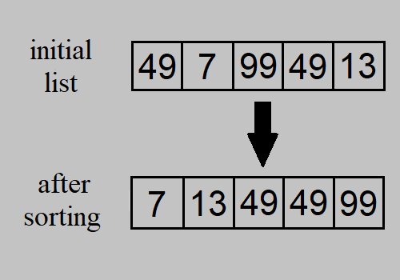
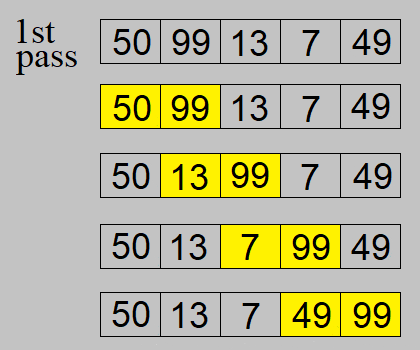
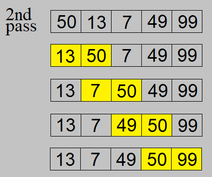
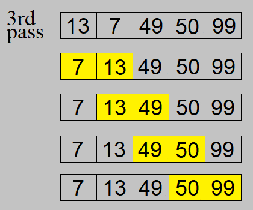
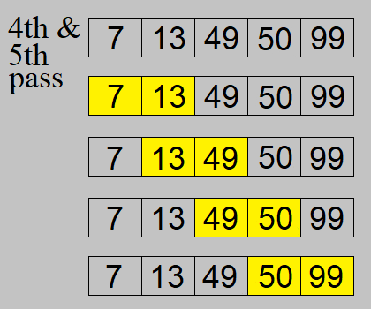
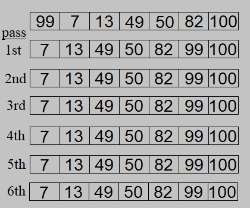
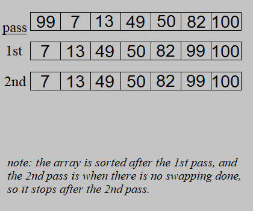

Sorting is the process of arranging a collection of data in a particular order, in these
showcases I will use an array with numerical values and sort it in ascending order
(from the smallest value to the largest value).

Before we start, let's establish some (possibly foreign to some visitors) terms that I would be using:
- dataset: refers to a group/collection of data that you want to be sorted.
(i.e., the array shown in the picture above is a
group of integers)
- n: number of data in the datasets (length of the array).
- in-place: the sorting is performed within the given array, rather than duplicating
a new array with the sorted elements.
- stable: a stable algorithm refers to one that maintains the order of equal elements
in the array throughout the sorting
process. It can be hard to visualise what I mean just from the picture above, but you'll see better examples later on
in each of them.
A simple sorting algorithm that sorts the dataset by comparing each adjacent pairs and swapping them if needed.
Algorithm
1) Take the first element (treat as the current element) in the array and compare
against its next element.
2) If the current element is bigger than the next element, swap these 2 elements.
3) Repeat step 1 and 2 for the second elements onwards, and stop at the second last element.
4) Repeat steps 1-3 n - 1 more times.




There are 2 points to take note of here.
Firstly, after the i-th pass, the i-th largest elements
in the array are in the correct position. From the example shown, "99" was swapped into the last
position in the 1st pass, then "50" in the 2nd pass, and so on. Because of it, it is safe to say that
there is no need to compare with those elements afterwards since they would be at equal to or greater
than every element before it and thus no swapping will be done on it. (This is similar to how larger
bubbles float to the top faster, so the i-th largest elements will always be guaranteed to "float" to the
back first, before the remaining elements are sorted.).
Secondly, the algorithm can terminate early after there is no swapping of elements in a pass.
Notice that by the 3rd pass, the array is already sorted and no pairs were swapped in the 4th and 5th passes.
If there is no change in the array after one pass, re-checking each pair of elements again will still
result in no change occurring in the consecutive passes. As such, there is unnecessary time and effort that
can be reduced by simply stopping early once no swapping was done in a pass. Using an example below, the time
taken to sort the array can be cut down to only 2 passes, which is one-third of what it would've taken with
6 passes.


Analysis
Time Complexity: O(n2)
Space Complexity: O(1)
Stability: Stable.
Insertion sort is a simple sorting algorithm that works by partitioning the array into 2 parts: the sorted
and unsorted. Take an element from the unsorted part and insert it into its correct position in the sorted
part, and iterate until every unsorted element is inserted in the sorted part.
1) Start with the second element in the array as the current element, assuming the first
is already sorted.
2) Compare the current element with the preceeding element, if the current element is
smaller than the preceeding one,
swap their positions.
3) Repeat step 2 until either the current element becomes the first element in the array
(there are no preceeding elements) or
the current element is larger than or equal to the preceeding one. Consider the current element
as sorted.
4) Repeat step 2 and 3 with the next unsorted element, until the last element in the array
is sorted.
Time Complexity: O(n2)
Space Complexity: O(1)
Stability: Stable.
Selection sort is another simple algorithm that partitions the array into 2 parts similar to
insertion sort. However, selection sort instead finds the smallest element in the unsorted part
to put at the start of the unsorted part (aka at the end of the sorted part). Iteratively find
the smallest element until there is no elements left in the unsorted part.
1) Start with index i = 0 (referencing the first index of the array).
2) Find the smallest element in the subarray from array[i] to array[n-1].
3) Swap the indices of the found element with the element at index i.
4) Increment i by 1 and repeat steps 2 and 3 until i = n - 1.
Explanation
Time Complexity: O(n2)
Space Complexity: O(1)
Stability: Not stable.
Merge sort is a sorting algorithm that works by recursively dividing an array into smaller subarrays,
sorting each subarray, and then merging the sorted subarrays back together to form the sorted array.
Unlike the previous sorting algorithms, the merge sort do not typically sort the array in-place
(meaning that the sorting of elements is done outside of the original array, and usually in a newly
created array), alhough it is possible to perform an in-place merge sort.
1) Divide the array in half.
2) For each divided subarray, recursively repeat step 1 until each subarray has only 1
element.
3) For each pair of divided subarrays (belonging to the same array before it was split),
compare each elements and combine
them into another array in a sorted order.
4) Repeat with the newly combined arrays until they are combined into the original size.
Explanation
Analysis
Time Complexity: O(n * logn)
Space Complexity: O(n)
Stability: Stable.
Overview
Algorithm
Explanation
Analysis
Time Complexity: O(n2)
Space Complexity: O(1)
Stability: Not stable.
I'd just like to say that there is no definite "best" sorting algorithm
(although there could be a "worst" one) since the answer can change depending on what it
is used on. Secondly, there are tons of sorting algorithms (and its variants) that
exist, and more will continue to be created (by aspiring PHD graduates in their thesis)
in the future, so I'd only list the basics/common ones. If you're interested in the
others, feel free to explore more online (I'm sure there are research papers that
provides thorough analyses into each of them).